30天鐵人賽介紹 AWS 雲端世界 - 25: AWS 關聯式資料庫服務 - RDS
接著要開始介紹 AWS 資料服務，當前 AWS 上有四種目前主流的資料庫類型：
RDBMS 類型 : Amazon RDS
NoSQL key-value 類型 : Amazon DynamoDB
NoSQL Cache 類型 : Amazon ElastiCache
Data Warehouse 類型 : Amazon Redshift
首先先介紹 RDS 服務。
What is RDS
Amazon Relational Database Service (RDS) 簡單來講就是一個關聯式資料庫服務，可以提供簡單的步驟快速設定建立起一個新的資料庫服務個體而不用擔心日後的擴展與資料搬移等維護設計，全部交由 AWS 來幫你處理。只需要三個步驟就可以快速建立資料庫環境：
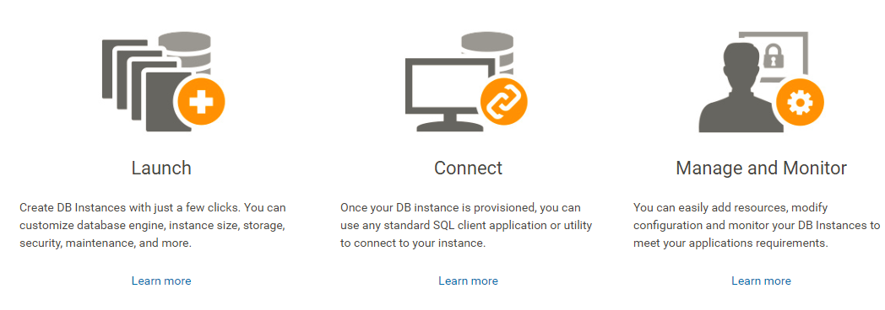
目前支援的類型有：
- PostgreSQL
- MySQL
- MariaDB
- Oracle
- Microsoft SQL Server
- Amazon Aurora
其中 Aurora DB 是 AWS 自己設計相容 MySQL 或 PostgreSQL 的企業級關聯式資料庫服務。官方是說如果現在已經有在使用上述兩種 DB 有意願遷移則可以無痛的轉移，只需將現有資料庫使用的程式碼、應用程式、驅動程式和工具只需進行極少量變更，即可與 Aurora 搭配使用。
而在RDS上可以自動根據transaction log去備份資料庫，或者手動建立snapshot完整備份資料庫到S3，而 RDS 的snapshot會自動跨地區(region)儲存。RDS 上也支援多個 AZ 佈署的DB Replication服務，使用Master — Standby(Slave)架構，AWS會自動將Standby存放在與Master不同的Availability Zone(AZ)，並且支援failover故障轉移，當Master故障後會自動切換到Standby，並將Standby視為新的Master，然後會啟動另一個新的Standby。
RDS 的費用部分與 EC2 類似，會根據區域、系統、CPU、Memory、硬碟大小及流量等等，每個選擇都會影響到費用，其中費用部分已經包含需要付錢的DB授權費，所以不用擔心這部分（當然也會比較貴一點）。
這邊可能會先問有沒有什麼大企業在用 AWS 的資料庫服務呢？有興趣的請上網找 Netflix 的架構設計(Netflix Billing Migration to AWS、Netflix Billing Migration to AWS - Part II、Billing Migration to AWS - Part III)，它們家的資料庫就是從原本自建的 Oracle 轉移到 AWS RDS 上，故事內容可以參考：Netflix 把金流相關的系統轉移到 AWS 上跑 MySQL 的故事…
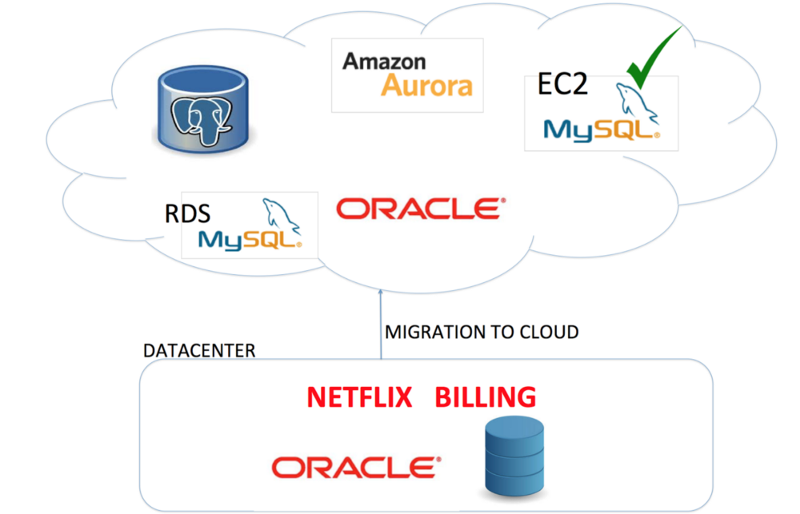
Hands on Lab
我們就實際來啟用 RDS 服務並透過 nodejs 實作 CRUD 的相關功能。
Create RDS Instance
首先先登入 [AWS Console] 後在中間的輸入框查詢 RDS ，或是透過左上角的 Services 點選到 Database 下的 Amazon RDS 服務：

接著就快速新增一個實體，這邊選擇 MySQL 作範例：
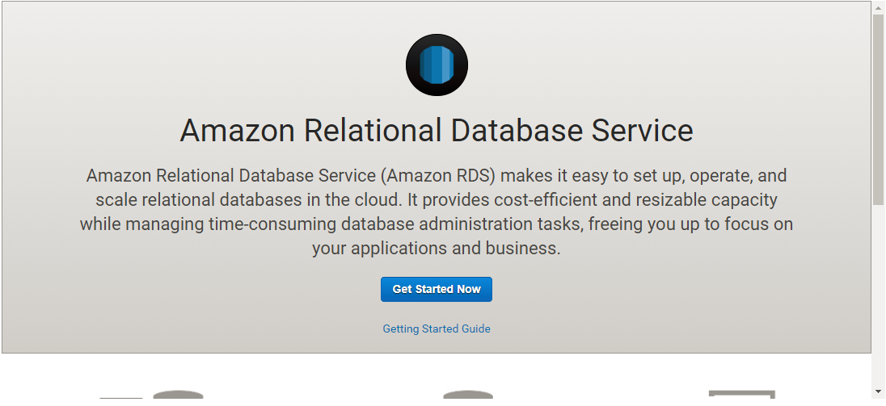
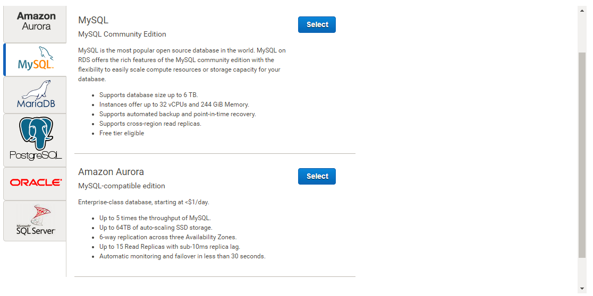
然後可以選擇套用開發或是上線環境的設定，但其實就是針對HA與執行效能有差別而已：
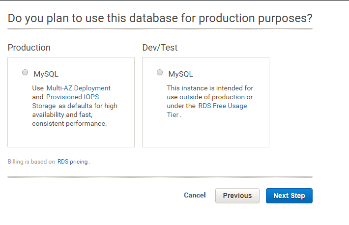
接著我們可以選擇 DB Instance 等級，越高級的當然處理起來效能會越好：
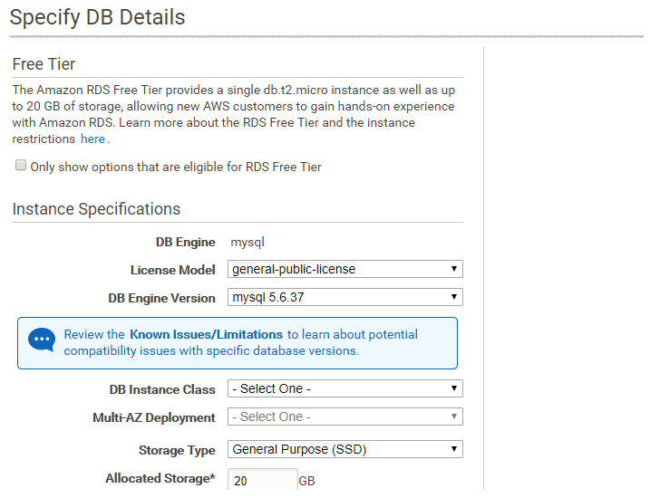
然後設定預設的使用者帳號：
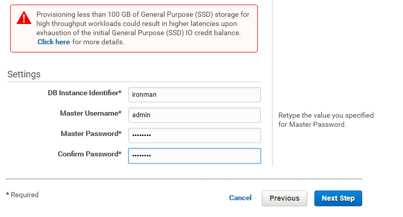
接著其他設定我們都讓他套用預設即可看到完成畫面：

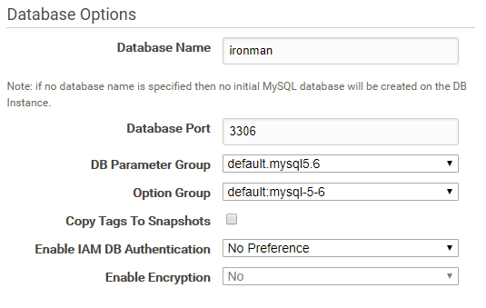


當服務從 creating 轉換至 backing-up 即可使用，而最終該狀態會轉變至 available：
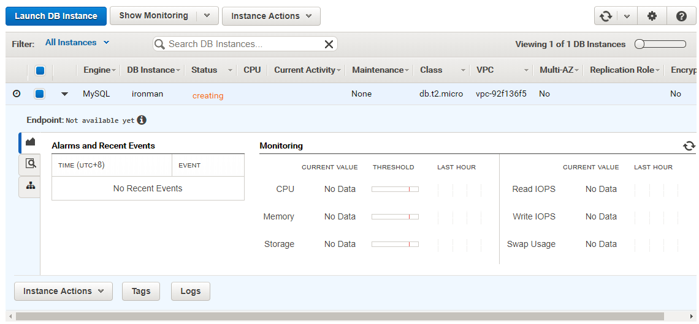
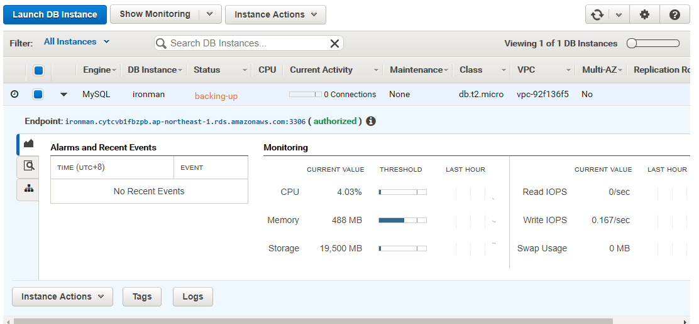
點進細節可以看到當前 RDS 的設定配置：
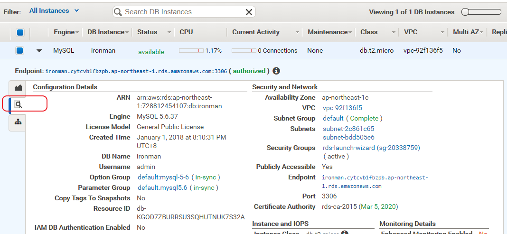
Implement CRUD on node.js with mysqljs
首先安裝 mysql 提供給 js 的 client SDK:
npm install mysql --save接著新增起始文件並寫入以下內容：
var mysql = require('mysql');
var connection = mysql.createConnection({
host : 'ironman.cytcvb1fbzpb.ap-northeast-1.rds.amazonaws.com',
user : 'admin',
password : 'pass.123',
database : 'ironman'
});
connection.connect((err) => {
if (err) throw err;
console.log('Connected!');
});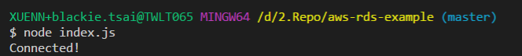
如此既可成功的連接到資料庫了，接下來簡單的新增一個資料表：
createTable.js
connection.connect(err => {
if (err) throw err;
console.log("Connected!");
var sql = "CREATE TABLE customers (name VARCHAR(255), address VARCHAR(255))";
connection.query(sql, function(err, result) {
if (err) throw err;
console.log("Table created");
});
});
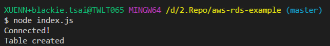
接下來依序實作CRUD功能如下：
Create
createCustomers.js
var mysql = require("mysql");
var connection = mysql.createConnection({
host: "ironman.cytcvb1fbzpb.ap-northeast-1.rds.amazonaws.com",
user: "<user>",
password: "<password>",
database: "<database>"
});
connection.connect(err => {
if (err) throw err;
console.log("Connected!");
var sql = "INSERT INTO customers (name, address) VALUES ('Blackie', '天龍國')";
connection.query(sql, function (err, result) {
if (err) throw err;
console.log("1 record inserted");
});
});
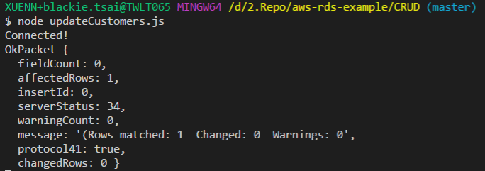
Read
readCustomers.js
var mysql = require("mysql");
var connection = mysql.createConnection({
host: "ironman.cytcvb1fbzpb.ap-northeast-1.rds.amazonaws.com",
user: "<user>",
password: "<password>",
database: "<database>"
});
connection.connect(err => {
if (err) throw err;
console.log("Connected!");
var sql = "SELECT * FROM customers";
connection.query(sql, function (err, result) {
if (err) throw err;
console.log(result);
});
});
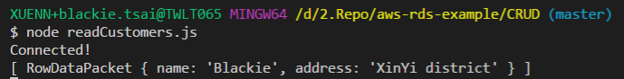
Update
updateCustomers.js
var mysql = require("mysql");
var connection = mysql.createConnection({
host: "ironman.cytcvb1fbzpb.ap-northeast-1.rds.amazonaws.com",
user: "<user>",
password: "<password>",
database: "<database>"
});
connection.connect(err => {
if (err) throw err;
console.log("Connected!");
var sql = "UPDATE customers SET address = 'XinYi district' WHERE name = 'Blackie'";
connection.query(sql, function (err, result) {
if (err) throw err;
console.log(result);
});
});
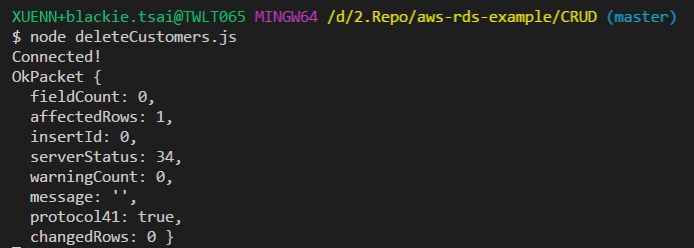
Delete
deleteCustomers.js
var mysql = require("mysql");
var connection = mysql.createConnection({
host: "ironman.cytcvb1fbzpb.ap-northeast-1.rds.amazonaws.com",
user: "<user>",
password: "<password>",
database: "<database>"
});
connection.connect(err => {
if (err) throw err;
console.log("Connected!");
var sql = "DELETE FROM customers WHERE name = 'Blackie'";
connection.query(sql, function (err, result) {
if (err) throw err;
console.log(result);
});
});

以上範例原始碼請至AWS RDS sample code